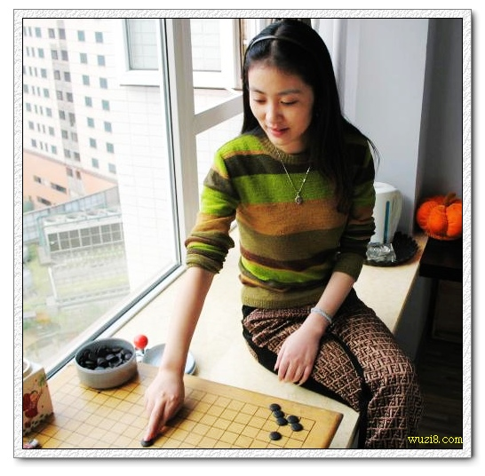

小刀棋图趣味找不同
首页
茗弈阁
#1 小刀棋图趣味找不同 作者：星月族 发表时间：2009-12-25 10:15:40
在百度图片搜“茗弈”时找到这样两张图，一张是小刀临窗弈棋，另一张好象也是那扇窗。考考你的眼力，仔细看看到底是不是一个地方。


［ 雨一直下 于 2009-12-25 10:48:52 时花20金币送鲜花一朵］
#2 Re:小刀美图趣味找不同 作者：茗弈小刀 发表时间：2009-12-25 12:00:36
 我发现不同了可以说不？几处不同有？
我发现不同了可以说不？几处不同有？
#3 Re:小刀棋图趣味找不同 作者：星月族 发表时间：2009-12-25 12:42:43
两张图片的不同至少有十处以上,但认定不是同一房间的关键点只要两处就足矣.
#4 Re:小刀棋图趣味找不同 作者：老黄 发表时间：2009-12-25 12:58:59
就没一处相同的
#5 Re:小刀棋图趣味找不同 作者：举步回眸浅浅笑 发表时间：2009-12-25 13:11:23
同意楼上的说法,没有一处相同的,
#6 Re:小刀棋图趣味找不同 作者：wd1988 发表时间：2009-12-25 15:14:02
楼主第一图里，小刀的右手手势是亮点 （中指）
（中指）
#7 Re:Re:小刀棋图趣味找不同 作者：星月族 发表时间：2009-12-25 17:31:45
#8 Re:Re:小刀棋图趣味找不同 作者：wsmwy 发表时间：2009-12-25 19:45:06
引用：
原文由 wd1988 发表于 2009-12-25 15:14:02 :
楼主第一图里，小刀的右手手势是亮点（中指）
同感同感
#9 Re:小刀棋图趣味找不同 作者：极地剑客 发表时间：2009-12-25 21:00:45
确定是本人吗~棋盘好象是围棋的~挺不错的~
#10 Re:小刀棋图趣味找不同 作者：大雪无痕 发表时间：2009-12-25 21:57:31
不是一个地方的楼房，不是一副棋，后一张相片是赝品